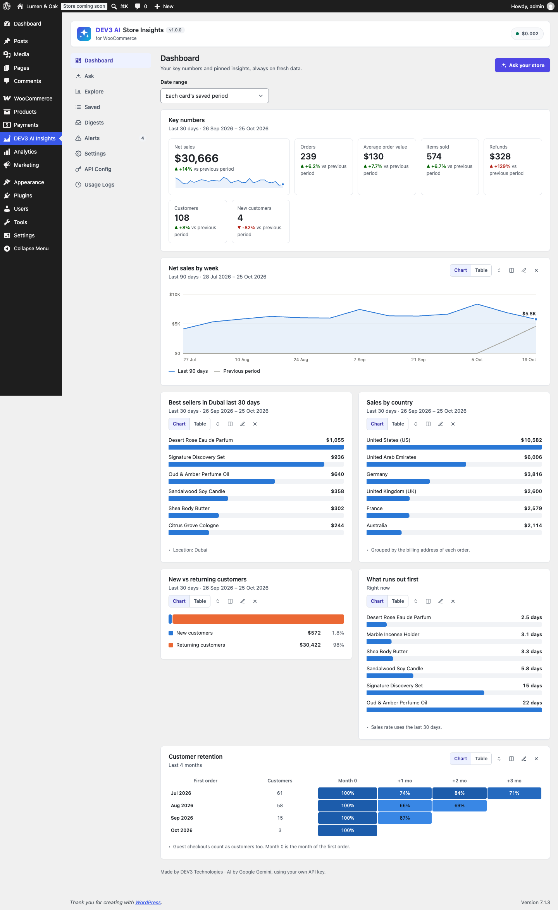
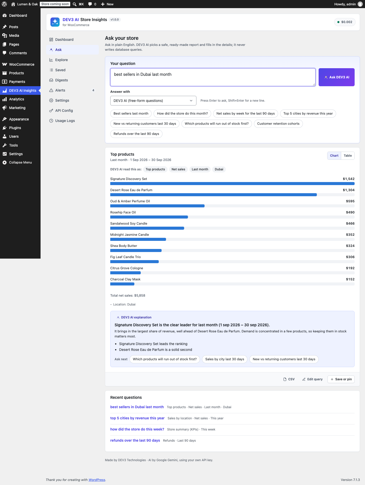
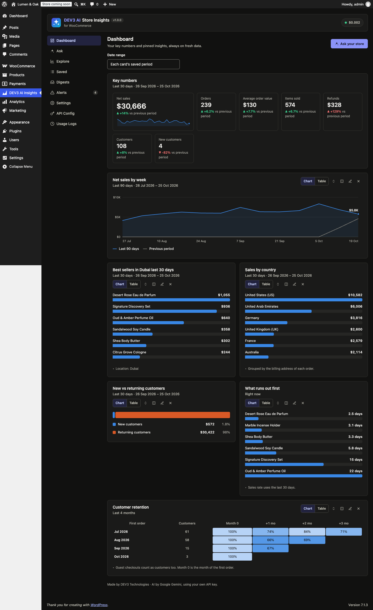
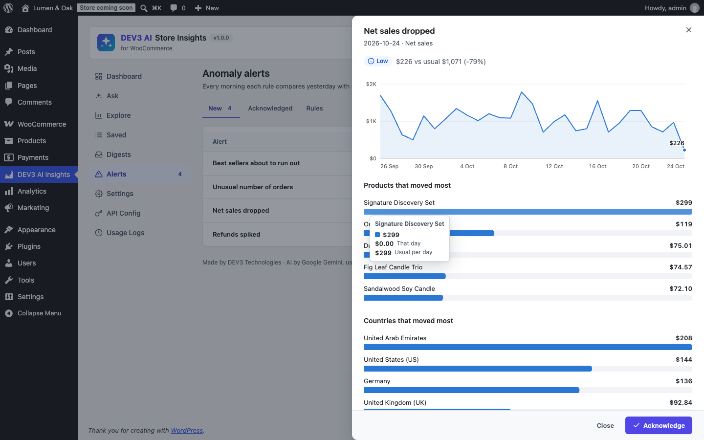
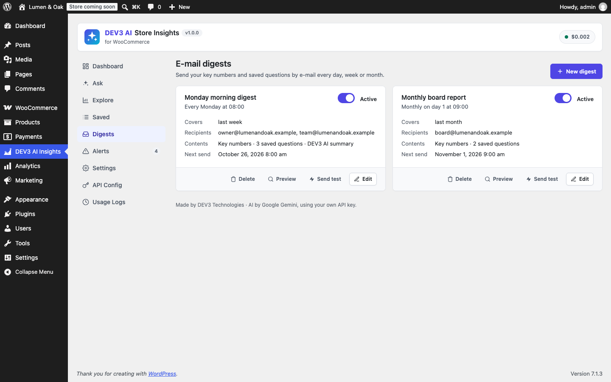
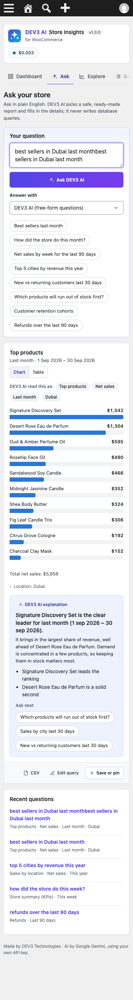

Installation
- Requirements: WordPress 6.0+, PHP 7.4+ (tested on 8.3) and WooCommerce 8.0+.
- In wp-admin, go to Plugins › Add New › Upload Plugin, choose
dev3-ai-store-insights-for-woocommerce.zip, then install and activate it. - Open DEV3 AI Insights in the admin menu.
No licence key or activation is needed. Updates ship as new zips.
Quick start
- Open Dashboard. If the data health notice says some orders are missing from WooCommerce Analytics, click Import them now.
- Open Ask and click a suggestion, or type a question such as "best sellers in Dubai last month".
- Under the answer, click Save or pin to add it to the dashboard.
- In Digests › New digest, pick weekly and add your e-mail address. Use Preview and Send test to check it.
- In Alerts › Rules, keep the default rules or click Suggest rules with DEV3 AI. Check now scans the last few days.
Ask your store
Type a question in plain English. Press Enter to ask, or Shift+Enter for a new line.
- DEV3 AI mode uses Gemini function calling. The model receives the list of report functions together with their typed options, plus context: today's date, your timezone and week start, your currency, your categories and the countries and cities that have orders. It replies with a function name and options only. The plugin validates the reply again and drops unknown functions, invalid choices and out-of-range numbers, then runs prepared SQL. The model never writes SQL.
- Built-in rules (no AI) understand periods ("last month", "past 14 days", "in March", "2025", "this quarter"), report words (best sellers, categories, by country/city, new vs returning, top customers, refunds, cohorts/retention, stock, coupons, AOV, daily/weekly/monthly) and "top N". They also recognise the locations and categories in your store. If DEV3 AI fails or is not connected, Ask uses the rules automatically.
- Each answer shows:
- "DEV3 AI read this as…" chips, so you can check how the question was understood
- a chart, with a Table toggle
- notes, such as which address is used for locations
- an explanation and follow-up questions
- CSV, Edit query (opens it in Explore) and Save or pin
- Recent questions are listed under the answer. Click one to ask it again.
Report library
| Report | Options | Chart |
|---|---|---|
| Store summary | period, compare, filters | KPI tiles with deltas and a sparkline |
| Sales trend | metric (net/gross sales, orders, items, AOV, refunds, customers), interval, period, compare, filters | Line; the comparison period is drawn in grey |
| Top products / Top categories | metric (revenue, quantity, orders), rows, period, filters | Ranked bars |
| Sales by location | country, region or city; metric; rows; period; filters | Ranked bars |
| Customer segments | new vs returning or registered vs guest; metric | Part-to-whole bar |
| Top customers | revenue, orders or AOV | Ranked bars |
| Refunds | trend or by product | Line + KPI tiles / bars |
| Customer cohorts | 3–12 months; retention or revenue | Heatmap |
| Stock status | low, out, days of cover, overstock; category | Bars / table |
| Top coupons | orders or discount given | Ranked bars |
The filters are location (country name or code, state/region/emirate, or city), category (sub-categories included), product (name or SKU), customer type (new/returning) and account type (registered/guest). Periods use your site timezone and week start. Order statuses you exclude under WooCommerce › Settings › Advanced › Analytics are left out of every report. Refunds are counted as negative amounts, just as WooCommerce Analytics counts them.
Explore
Explore is a form for building any report by hand: pick the report, then its options. Location and category fields suggest values from your store. Explore works without AI. When a key is set, Explain with DEV3 AI adds an AI explanation.
Saved questions and dashboard
- Saved questions store the report and its options, not the numbers. Each time you open one, it runs again on fresh data. Relative periods such as "last month" move forward with the calendar.
- Pinned questions appear as cards on the dashboard. Each card can be moved, switched between half and full width, opened in Explore, downloaded as CSV or unpinned.
- The Date range above the cards applies to every card. Choose "Each card's saved period" to keep each card's own range.
- The WordPress Dashboard widget shows today's numbers against yesterday, a 14-day sparkline and your pins. You can turn it off in Settings.
E-mail digests
- Digests run daily (covering yesterday), weekly (last week) or monthly (last month), at the hour you choose in site time.
- Content: key numbers with changes, any saved questions you pick, and an optional DEV3 AI summary paragraph. Rankings use the digest period; trends keep their saved range.
- Charts in e-mails are built from inline-styled tables, because most e-mail clients block SVG. Each e-mail also includes a plain-text version.
- An hourly WP-Cron event sends each digest once per period. For reliable delivery, use an SMTP plugin.
Anomaly alerts
- Once a day, every active rule compares yesterday's value with the average and spread (standard deviation) of the 28 days before it.
- An alert is raised when all of these are true:
- the change is in the direction the rule watches
- the z-score passes the sensitivity (low 3, medium 2.5, high 2)
- the change passes the minimum percent
- the average is at least the minimum baseline
- Metrics: net sales, orders, AOV, items sold, refunds and refund rate. A rule can be limited to one location or category.
- The stock rule flags any of your top-10 sellers that has fewer days of stock left than you set.
- Each rule raises at most one alert per day. Alerts can e-mail the rule's recipients, or the Settings recipients, or the site admin.
- The alert drawer shows the 29-day trend, the products and countries that moved most, and an explanation: written by DEV3 AI when a key is set, otherwise by the plugin from the movers.
- Suggest rules with DEV3 AI reads 90 days of daily totals and proposes thresholds as a draft. Nothing is saved until you click Add these rules.
Charts, themes and accessibility
- All charts are SVG and resize to the width of their card. They use 2px lines, bars no thicker than 24px with rounded ends, light grid lines, and a single value label at the end of each line.
- Hover, or focus and use the arrow keys, to read the value at any point. Every chart also has a Table view.
- Colours come from a colour-blind-safe palette, chosen separately for light and dark mode. Changes always show an arrow, a sign and a "better/worse" label, so colour is never the only signal.
- Settings › Theme: Match my device, Light or Dark.
Settings
| Setting | What it does |
|---|---|
| Theme | Auto, light or dark |
| Default dashboard period | The period the KPI row uses |
| Answer questions with | DEV3 AI (falls back to rules) or rules only |
| Locations come from | The billing or shipping address |
| Explain every answer with DEV3 AI | Off: the plugin writes the summaries (no tokens) |
| Send customer names to Google Gemini | Off by default (names are anonymised) |
| Keep question history for | 7–730 days |
| Alerts / recipients | Turns daily checks on or off; sets the default recipients |
| Data health | Counts orders missing from Analytics and imports them in the background |
| Uninstall | Deletes the plugin's tables and options when the plugin is deleted |
Google Gemini API key
- Go to Google AI Studio and click Create API key.
- Paste the key in DEV3 AI Insights › API Config and save. The key is stored encrypted (AES-256-GCM) and is never sent to the browser. You can also define
DEV3SI_GEMINI_API_KEYinwp-config.php. - Optional: choose the models (default
gemini-2.5-flash), set a monthly budget cap and use the AI on/off switch. Usage Logs show the tokens used and the estimated cost.
Privacy
When DEV3 AI is enabled, Google Gemini receives:
- your question
- aggregated report rows (at most 15 per report)
- names of categories and locations
E-mail addresses are never sent, and customer names are anonymised unless you allow them. The plugin adds a suggested paragraph to your privacy policy, plus a personal-data exporter and eraser for each user's question history.
Compatibility
- HPOS: reports read the WooCommerce Analytics lookup tables, which WooCommerce fills for both order storages. Order addresses come from
wc_order_addresseswhen HPOS is active and from post meta otherwise. Both are covered by automated tests. - Cart & Checkout blocks: the plugin does not touch checkout, so they are not affected.
- Multi-currency stores: totals are summed as stored by WooCommerce Analytics.
- Multisite safe, translation ready (
languages/*.pot) and RTL-friendly.
Hooks
| Hook | Type | Use |
|---|---|---|
dev3si_query_functions | filter | Add or remove report functions (label, description, params, run callable) |
dev3si_query_result( $result, $fn, $args ) | filter | Change any result |
dev3si_excluded_statuses( $statuses ) | filter | Order statuses left out of reports |
dev3si_ask_context( $ctx ) | filter | Store context given to the planner |
dev3si_ai_result_payload( $payload, $results ) | filter | Data sent to the model for explanations |
dev3si_digest_email( $email, $digest ) | filter | Subject, HTML and text of a digest |
dev3si_alert_threshold( $z, $rule ) | filter | z-score needed to raise an alert |
dev3si_alert_recipients( $emails, $alert ) | filter | Alert e-mail recipients |
dev3si_question_asked( $question, $plan, $results ) | action | After a question is answered |
dev3si_alert_created( $alert, $rule ) | action | After an alert is stored |
dev3si_digest_sent( $digest, $recipients ) | action | After a digest is sent |
REST API
Namespace dev3si/v1. Every route requires the manage_options capability and a REST nonce.
| Route | Purpose |
|---|---|
GET meta | Report catalogue, periods, locations, categories, data health, AI status |
POST ask | {question, mode} → plan, results, explanation |
POST run · POST explain | Run one report ({fn, args, over}) / explain it with DEV3 AI |
GET export | CSV of a report |
questions, questions/<id>, questions/reorder | Saved questions, pins and history |
digests, digests/<id>/test, digests/<id>/preview | Digests |
alerts, alerts/<id>, alerts/<id>/explain | Alert log |
alert-rules, alert-rules/check, alert-rules/advice | Rules, scan, DEV3 AI suggestions |
health, health/import | Data health and the Analytics import job |
FAQ
Can the AI change or leak my data?
No. The AI can only choose a read-only report and fill in its options. Every option is checked again on the server, and queries are prepared statements.
The numbers differ from the Orders screen.
Reports follow WooCommerce Analytics: excluded statuses are left out and refunds are subtracted. If orders are missing, use Settings › Data health › Import missing orders.
"Dubai" is both a city and an emirate. Which one is used?
Both. A location matches the country name or code, the state or region (WooCommerce state lists), or the city. Orders matching any of them are included.
Digests are not arriving.
WordPress needs a working mail setup (an SMTP plugin helps) and a working WP-Cron (real site traffic or a server cron job).
Changelog
1.0.0: Initial release.